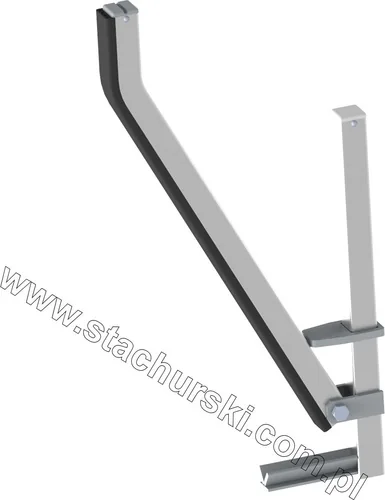

ACCESSORIES / 06 MODELS OFFICIAL CATALOGUE FAMILY
Accessories
for glass & windows
Useful add-ons for transport and storage, from securing poles to protective elements and rollers.
6 MODELS / OPTIONS·STACHURSKI / 1974
— IN THIS RANGE
Models and options in the official range
Product references follow Stachurski’s published catalogue. Confirm current availability and configuration with the team.
S↗
ACCESSORIES · PRODUCT FAMILY
Have a model in mind?
Send the model code and your handling requirements to request a tailored quotation.